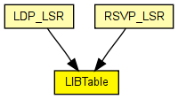
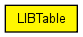

Stores the LIB (Label Information Base), accessed by MPLS and its associated control protocols (RSVP, LDP) via direct C++ method calls.
The following diagram shows usage relationships between types. Unresolved types are missing from the diagram. Click here to see the full picture.
The following diagram shows inheritance relationships for this type. Unresolved types are missing from the diagram. Click here to see the full picture.
If a module type shows up more than once, that means it has been defined in more than one NED file.
| LDP_LSR (compound module) |
An LDP-capable router. |
| RSVP_LSR (compound module) |
An RSVP-TE capable router. |
| Name | Type | Default value | Description |
|---|---|---|---|
| conf | xml |
table contents to be loaded on startup |
| Name | Value | Description |
|---|---|---|
| display | i=block/table2 |
// // Stores the LIB (Label Information Base), accessed by MPLS and its // associated control protocols (RSVP, LDP) via direct C++ method calls. // simple LIBTable { parameters: xml conf; // table contents to be loaded on startup @display("i=block/table2"); }